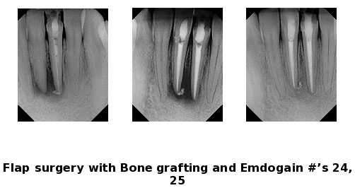

Over a period of time, the jawbone associated with missing teeth atrophies or is reabsorbed. This often leaves a condition in which there is poor quality and quantity of bone suitable for placement of dental implants. In these situations, most patients are not candidates for placement of dental implants.

Today, we have the ability to grow bone where needed. This not only gives us the opportunity to place implants of proper length and width, it also gives us a chance to restore functionality and esthetic appearance.
Major Bone Grafting
Bone grafting can repair implant sites with inadequate bone structure due to previous extractions, gum disease, or injuries. The bone is either obtained from a tissue bank or your own bone is taken from the jaw, hip, or tibia (below the knee.) Sinus bone grafts are also performed to replace bone in the posterior upper jaw. In addition, special membranes may be utilized that dissolve under the gum and protect the bone graft and encourage bone regeneration. This is called guided bone regeneration or guided tissue regeneration.
Major bone grafts are typically performed to repair defects of the jaws. These defects may arise as a result of traumatic injuries, tumor surgery, or congenital defects. Large defects are repaired using the patient's own bone. This bone is harvested from a number of different sites depending on the size of he defect. The skull (cranium), hip (iliac crest), and lateral knee (tibia) are common donor sites. These procedures are routinely performed in an operating room and require a hospital stay.
Sinus Lift Procedure
The maxillary sinuses are behind your cheeks and on top of the upper teeth. Sinuses are like empty rooms that have nothing in them. Some of the roots of the natural upper teeth extend up into the maxillary sinuses. When these upper teeth are removed, there is often just a thin wall of bone separating the maxillary sinus and the mouth. Dental implants need bone to hold them in place. When the sinus wall is very thin, it is impossible to place dental implants in this bone.
There is a solution called a sinus graft or sinus lift graft. The dental implant surgeon enters the sinus from where the upper teeth used to be. The sinus membrane is then lifted upward and donor bone is inserted into the floor of the sinus. Keep in mind that the floor of the sinus is the roof of the upper jaw. After several months of healing, the bone becomes part of the patient's jaw and dental implants can be inserted and stabilized in this new sinus bone.
The sinus graft makes it possible for many patients to have dental implants when years ago there was no other option other than wearing loose dentures.
If enough bone between the upper jaw ridge and the bottom of the sinus is available to stabilize the implant well, sinus augmentations and implant placement can sometimes be performed as a single procedure. If not enough bone is available, the sinus augmentation will have to be performed first, then the graft will have to mature for several months, depending upon the type of graft material used. Once the graft has matured, the implants can be placed.
Ridge Expansion
In severe cases, the ridge has been reabsorbed and a bone graft is placed to increase ridge height and/or width. This is a technique used to restore the lost bone dimension when the jaw ridge gets too thin to place conventional implants. In this procedure, the bony ridge of the jaw is literally expanded by mechanical means. Bone graft material can be placed and matured for a few months before placing the implant.
Bone Grafting around Natural Teeth
In certain situations bone grafting around natural teeth can be done, often times Dr. Cook uses Emdogain to help regenerate bone in these areas. Call to see if you are a candidate for this treatment.
